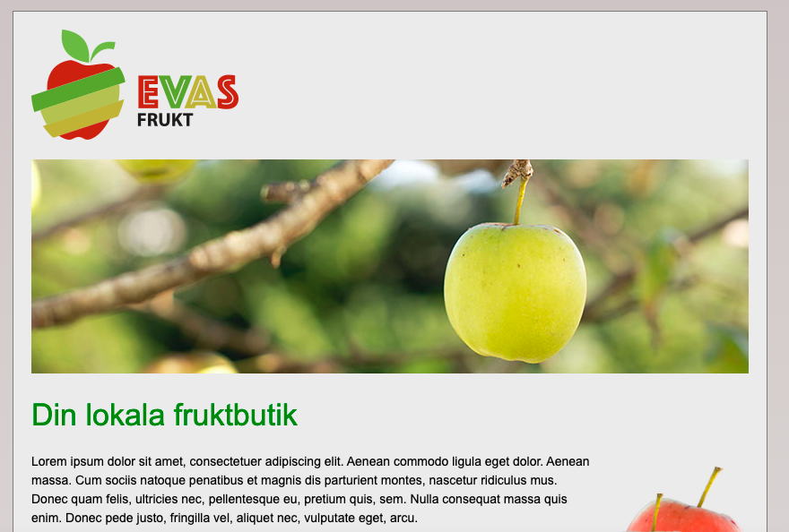
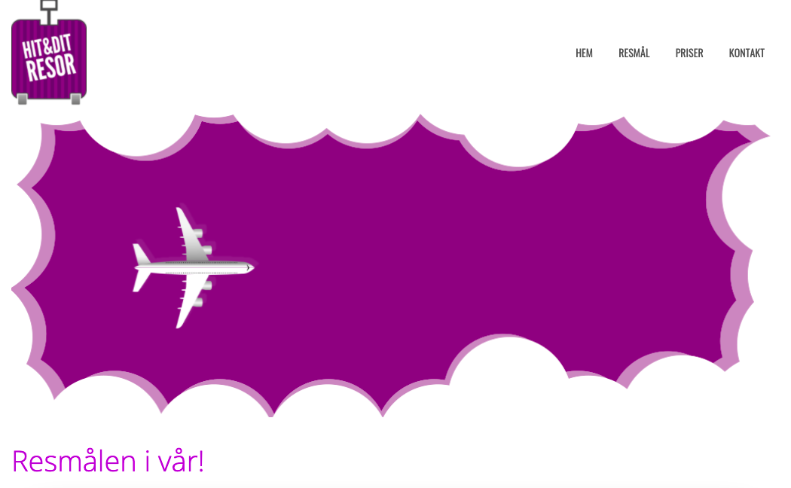
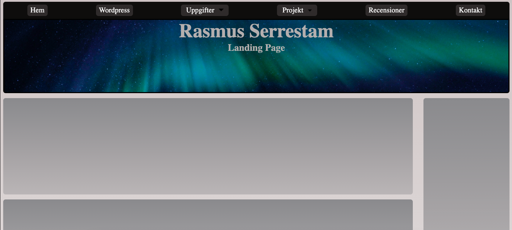

Några av mina projekt jag har gjort tidigare.
Evas Frukt
Mitt första projekt gjorde jag för den stora fruktgrossisten Eva som inte bara har flera olika typer av frukt utan också väldigt många lådor med frukt. Coolt var det att få jobba med Eva, mätt var jag mest hela tiden också.
Hit & ditresor
Det stora resebolaget Hit & ditresor lät mig bygga deras helt nya webbplats. Lite hjälp fick jag faktiskt av en kille som heter Erik men jag orkade inte lyssna på allt han sade så vissa saker gjorde jag helt på egen hand. Grymt nöjda var de med projektet så jag fick med mig flera kartonger med broschyrer hem.
Landing page
Min lärare tjatar om att jag skall bygga en egen sida där jag kan visa upp allt jag gör, jag tror han har en baktanke med detta och kommer välja den bästa landing page och göra om den till sin egen. Säg inget till någon, men det är var jag tror. Jag börjar dock bli rätt så nöjd med min landing page och ser att flera elever i klassen gör mycket sämre saker. Shhhh igen.
